This package hosts basic models for quasi stationary multiphase circuits. Quasi stationary theory can be found in the references.
| Name | Description |
|---|---|
| 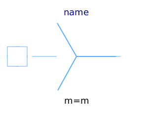 Star | Star connection |
| Delta (polygon) connection | |
| 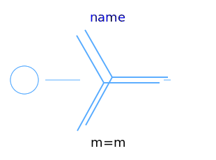 MultiStar | Star connection of multi phase systems consisting of multiple base systems |
| 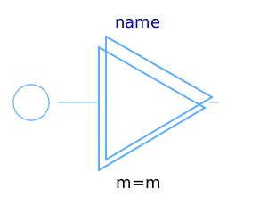 MultiDelta | Delta (polygon) connection of multi phase systems consisting of multiple base systems |
| 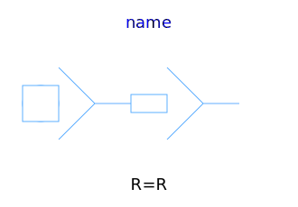 MultiStarResistance | Resistance connection of star points |
| 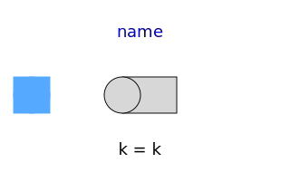 PlugToPin_p | Connect one (positive) pin |
| 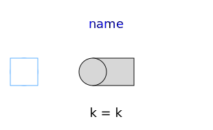 PlugToPin_n | Connect one (negative) pin |
| 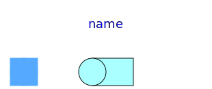 PlugToPins_p | Connect all (positive) pins |
| 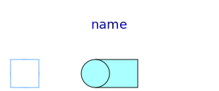 PlugToPins_n | Connect all (negative) pins |
|
|
Multiphase linear resistor |
| 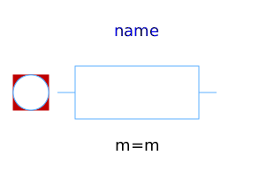 Conductor | Multiphase linear conductor |
| 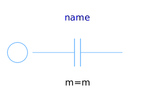 Capacitor | Multiphase linear capacitor |
| 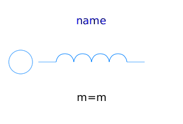 Inductor | Multiphase linear inductor |
| 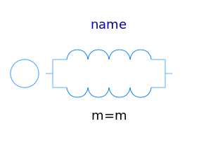 MutualInductor | Linear mutual inductor |
| 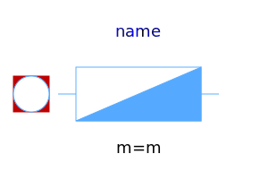 Impedance | Multiphase linear impedance |
| Admittance | Multiphase linear admittance |
| 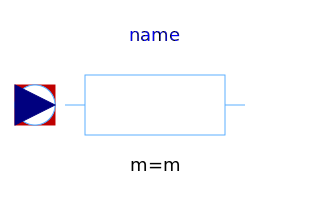 VariableResistor | Multiphase variable resistor |
| VariableConductor | Multiphase variable conductor |
| 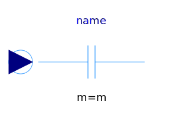 VariableCapacitor | Multiphase variable capacitor |
| 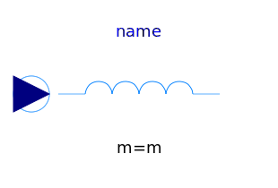 VariableInductor | Multiphase variable inductor |
| 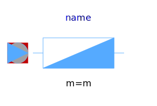 VariableImpedance | Multiphase variable impedance |
| VariableAdmittance | Multiphase variable admittance |